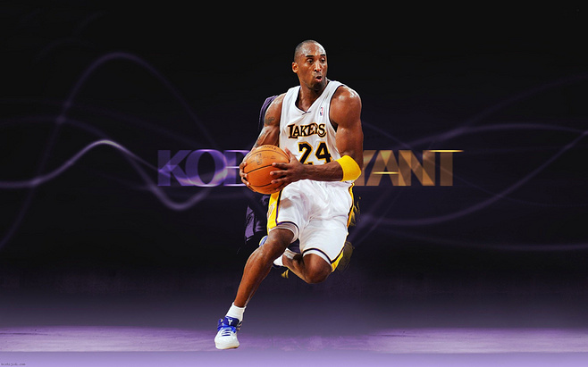
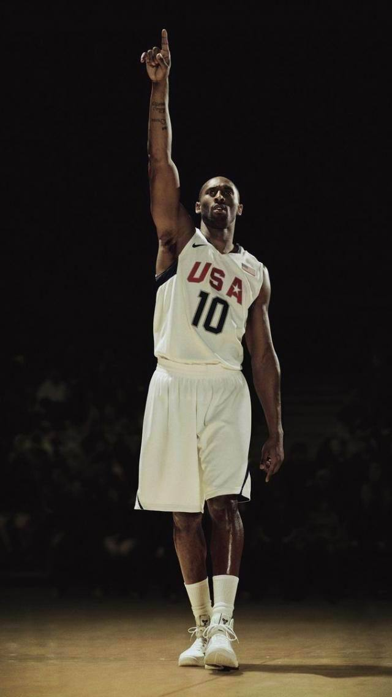

【Kobe Bryant 】
美国传奇篮球运动员
科比·布莱恩特（Kobe Bryant），1978年8月23日出生于美国宾夕法尼亚州费城，前美国职业篮球运动员，司职得分后卫/小前锋（锋卫摇摆人），整个NBA生涯（1996年-2016年）一直效力于NBA洛杉矶湖人队，绰号“黑曼巴”，是前NBA球员乔·布莱恩特的儿子。
科比是NBA最好的得分手之一，突破、投篮、罚球、三分球他都驾轻就熟，几乎没有进攻盲区，单场比赛81分的个人纪录就有力地证明了这一点。除了疯狂的得分外，科比的组织能力也很出众，经常担任球队进攻的第一发起人。另外科比还是联盟中最好的防守人之一，贴身防守非常具有压迫性。
2016年4月14日，科比·布莱恩特在生涯最后一场主场对阵爵士的常规赛上宣布退役。


NBA生涯更多>
1996年NBA选秀
作为第一位直接从高中参加NBA选秀的后卫球员，科比于1996年第一轮第13顺位被夏洛特黄蜂队选中。由于科比在选秀时仅17岁，他的父母不得不和他一起与湖人队签约。直到新赛季开始，满18岁的科比才独立签署了合同。
最初的赛季（1996-1999）
在科比的新秀赛季，他大部分时间作为埃迪·琼斯(Eddie Jones)和尼克·范·埃克塞尔(Nick Van Exel)的替补登场。当时他成为NBA历史上最年轻的出场球员,同时他还是NBA历史上最年轻的首发球员。
三连冠时期（1999-2002）
在科比的新秀赛季，他大部分时间作为埃迪·琼斯(Eddie Jones)和尼克·范·埃克塞尔(Nick Van Exel)的替补登场。当时他成为NBA历史上最年轻的出场球员,同时他还是NBA历史上最年轻的首发球员。
短暂的低潮（2002-2004）
在科比的新秀赛季，他大部分时间作为埃迪·琼斯(Eddie Jones)和尼克·范·埃克塞尔(Nick Van Exel)的替补登场。当时他成为NBA历史上最年轻的出场球员,同时他还是NBA历史上最年轻的首发球员。
失望季后赛（2004-2007）
在科比的新秀赛季，他大部分时间作为埃迪·琼斯(Eddie Jones)和尼克·范·埃克塞尔(Nick Van Exel)的替补登场。当时他成为NBA历史上最年轻的出场球员,同时他还是NBA历史上最年轻的首发球员。
MVP赛季（2007-2008）
在科比的新秀赛季，他大部分时间作为埃迪·琼斯(Eddie Jones)和尼克·范·埃克塞尔(Nick Van Exel)的替补登场。当时他成为NBA历史上最年轻的出场球员,同时他还是NBA历史上最年轻的首发球员。
蝉联总冠军（2008-2010）
在科比的新秀赛季，他大部分时间作为埃迪·琼斯(Eddie Jones)和尼克·范·埃克塞尔(Nick Van Exel)的替补登场。当时他成为NBA历史上最年轻的出场球员,同时他还是NBA历史上最年轻的首发球员。
追逐第六冠（2010-2013）
在科比的新秀赛季，他大部分时间作为埃迪·琼斯(Eddie Jones)和尼克·范·埃克塞尔(Nick Van Exel)的替补登场。当时他成为NBA历史上最年轻的出场球员,同时他还是NBA历史上最年轻的首发球员。
最终的赛季（2013-2016）
在科比的新秀赛季，他大部分时间作为埃迪·琼斯(Eddie Jones)和尼克·范·埃克塞尔(Nick Van Exel)的替补登场。当时他成为NBA历史上最年轻的出场球员,同时他还是NBA历史上最年轻的首发球员。
战绩详情>

- 21世纪头10年最佳NBA球员
- 奥运会冠军：2次（2008年北京奥运会，2012年伦敦奥运会）
- NBA总冠军：5次（2000，2001，2002，2009，2010）
- NBA得分王：2次（2006，2007）
- NBA西部冠军：7次（2000—2002，2004，2008—2010）
- NBA总决赛MVP：2次（2009，2010）
- NBA常规赛MVP：1次（2008）
- NBA全明星赛MVP：4次（2002，2007，2009－与沙奎尔·奥尼尔共享，2011）
- NBA全明星赛扣篮大赛冠军：1次（1997）
- NBA全明星：18次（1998，2000—2016）
科比，不说再见视频>
2015年11月30日，洛杉矶湖人队当家球星科比-布莱恩特在《球员论坛网》发表文章宣布，本赛季结束后正式退役，他说：“这个赛季结束后，我已经离开了”。
他还写了一篇长长的文章《致亲爱的篮球》作为告别文，他在文中写到，篮球这项运动给了一个六岁男孩为湖人打球的梦想，他将一生都热爱这项运动。他说：“很明显，我的热爱不能持续更长时间了，我的心脏能够经受打击，我的意志能经受得住消磨，但我的身体告诉我是时候说再见了。所以，没问题，我准备放手”。
2016年4月13日，15/16赛季NBA常规赛，爵士VS湖人，科比告别仪式。经过四节比赛，科比带领湖人战胜爵士队，科比拿下60分。
-
假装是微博二维码
-
假装是微博二维码
-
假装是微博二维码